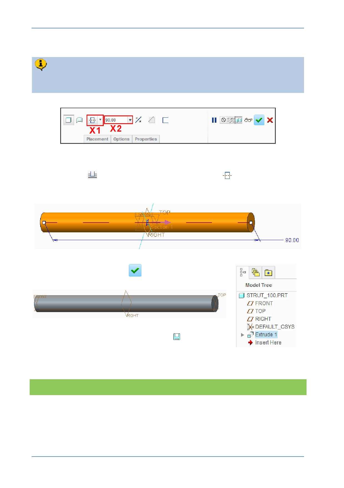

PTC Academic Program
Step 4: Complete the Extrude that defines the length of the strut
You will now edit the depth of the Extrude to be 90, symetrical on both sides of
the sketch plane.
1. Making changes to the extrude using the dashboard:
Click Blind
and then select Extrude on both sides
from the depth drop-
down menu (shown as X1 ).
Click in the depth field X2 , type 90 and press ENTER .
Click Complete Feature
from the dashboard to
complete the extrude.
2. Saving your work:
In the Quick Access toolbar, click Save
.
In the Save Object dialog, click OK to specify that the
model will be saved to your working directory.
What have you learned?
Extrude - sketch based feature, extrude on both sides.
Dashboard interface.
Saving the current model to the working directory.
© 2012 PTC
Creo Parametric 2.0 Primer
Page 50